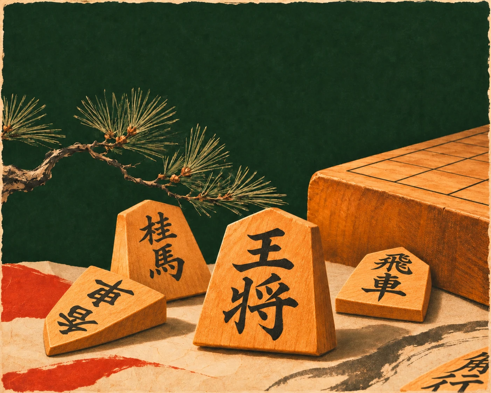

01
La teva primera partida
Descobreix com es mouen les peces i per què cada captura obre noves possibilitats.
Comença aquí →BARCELONA · ASSOCIACIÓ DES DEL 2011
Descobreix el shogi, els escacs japonesos. Un tauler, noves idees i una comunitat amb qui aprendre i compartir.

01
Descobreix com es mouen les peces i per què cada captura obre noves possibilitats.
Comença aquí →02
Acosta’t al tauler, coneix altres jugadors i pregunta sense por. Consulta les condicions de cada sessió.
Prepara la visita →03
Tallers, trobades i tornejos: descobreix les diferents maneres de viure el shogi amb l’associació.
Explora l’agenda →Ens trobem a Hostafrancs. Les dates i els horaris varien: consulta la propera sessió abans de venir.
Consulta l’agenda →Ens trobem a Hostafrancs. Les dates i els horaris varien: consulta la propera sessió abans de venir.

03 / Aprèn shogi
Al shogi, les peces que captures poden tornar al tauler del teu costat. És una de les idees que fan que cada partida sigui tan oberta, sorprenent i diferent.
Es juga en un tauler de 9 × 9. L’objectiu: fer escac i mat al rei rival. La resta comença amb una primera partida.
04 / La teva primera visita
L’associació anuncia activitats per aprendre i jugar. Contacta per trobar una sessió adequada al teu nivell.
Les obertures i els horaris poden canviar. Consulta l’agenda i confirma la sessió abans de desplaçar-te.
No sempre. Algunes publicacions distingeixen classes per a socis i joc obert. Pregunta per les condicions de l’activitat que t’interessi.
SHOGI NO KOKORO · L’ESPERIT DEL SHOGI